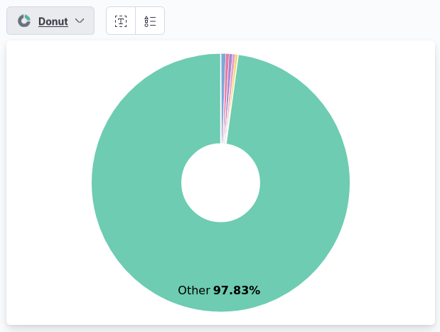
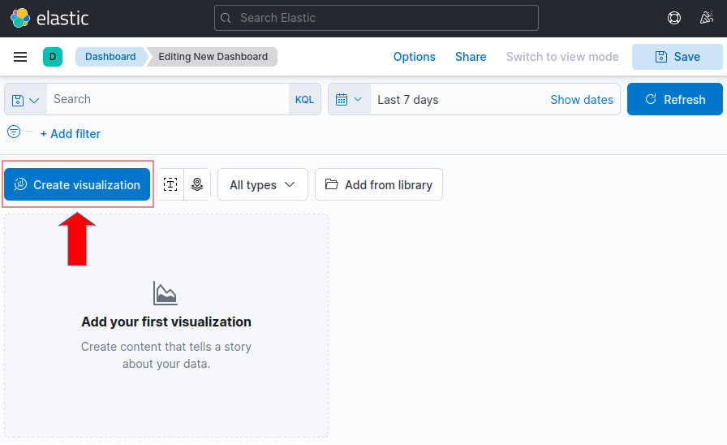
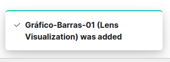

3.1.6.2 Visualizaciones
1. Escenario
Para trabajar con muchos datos, se ha procedido a la carga del ejemplo 'Sample web logs' (ver figura inferior). De este modo, se podrán crear gráficos con mejor representación.
2. Proceso de creación gráfica
Panel lateral izquierdo
Se accede a esta sección desde la barra de menú lateral izquierda. En la zona de Analytics está la opción Visualize Library.
Esta sección sirve para generar Gráficos que puedan resumir diferentes tipos de alertas. En primer lugar, aparecen todos los gráficos existentes pero también se pueden personalizar pulsando en el botón Create visualization.
Al pulsar el botón, muestra los diferentes tipos de gráficos que se pueden elegir a la hora de crear uno. En este caso de ejemplo, se elige la opción Lens.
Una vez seleccionado Lens, aparece la interfaz de creación que se describe a continuación. Se ha seleccionado kibana_sample_data_logs que corresponde al fichero del escenario propuesto. Si se observa la figura inferior, en la panel lateral izquierdo se encuentran los campos de las alertas, en el panel central la zona donde se muestran los gráficos y a la derecha algunas opciones de estos gráficos.
Como prueba, se seleccionará uno de los campos de la izquierda, en concreto, clientip, como fecha los últimos 7 días y a continuación, se arrastra a la zona central. Aparecerá el gráfico en la zona central junto con sugerencias debajo de como quedaría en otros tipos de gráficos (ver figura inferior).
Desde el combo de selección se puede cambiar el gráfico y su tipo.
Ejemplo, si se selecciona el tipo 'Donut', se obtiene la siguiente visualización.

Panel lateral derecho
En el panel lateral derecho se pueden cambiar las opciones del propio gráfico. Estas opciones permiten elegir si se quiere contar, hacer la media, obtener el máximo, etcétera. o incluso añadir más campos a este en otro eje para ver comparaciones.
Una vez se tenga el gráfico como se quiera, se pude guardar mediante el botón Save de la botonera superior derecha.
Al pulsar el botón Save, aparece una ventana donde se pude añadir el título del gráfico y si se quiere añadir a un dashboard. En este caso se selecciona la última opción (None) para después ver cómo hacerlo de manera manual y se selecciona también 'Add to library'.
En el panel lateral izquierdo, en la zona de Analytics está el apartado de Dashboard. Esta sección permite la creación de Dashboard, desde donde se podrám visualizar todos los gráficos que se quieran de forma conjunta.
De un modo similar a los Gráficos, la interfaz muestra todos los Dashboard existentes. Arriba a la derecha se puede crear un nuevo dashboard desde el botón Create dashboard.
Una vez se pulsa el botón de Create dashboard, aparece un dashboard nuevo, totalmente vacío. Para añadir gráficos a este existen 2 opciones:
- Crear uno nuevo desde el botón Create visualization.
- Añadirlo desde la librería de gráficos ya existentes con el botón Add from library.
1. Create visualization
Si se pulsa 'Create visualization' para crear uno nuevo.

A continuación, aparece la página de creación de gráficos donde se elige como ejemplo el campo memory para confeccionar un gráfico de barras.
Si se observa en la parte superior derecha, si se desea salir, en vez de Save como en la otra sección, está el botón Save and return (ver figura superior).Si se pulsa el botón, insertará el gráfico automáticamente en el dashboard antes creado y aparece una nueva ventana que es la del dashboard donde se puede ver cómo se ha insertado el gráfico (ver figura inferior).
2. Add from Library
La otra opción que se tiene para la creación de Dashboards es importar gráficos de la librería.
Si se pulsa el botón 'Add from Library', aparece una lista de posibles gráficos a añadir.
Para este caso, se busca el creado anteriormente 'Gráfico-Barras-01' y se hace click sobre él. Aparece un mensaje para indicar que dicho gráfico se ha añadido correctamente y a continuación, aparece en el panel frontal, teniendo ambos gráficos asociados a un mismo Dashboard.

Para guardar el Dashboard, hay pulsar el botón Save de arriba a la derecha.

Aparece una nueva ventana para que se pueda incorporar un nombre al dashboard para guardarlo. También existe la posibilidad de seleccionar la opción “store time with dashboard” que permite aplicarle un filtro de tiempo a la hora actualmente seleccionada cada vez que el dashboard sea cargado.
Obra publicada con Licencia Creative Commons Reconocimiento No comercial Compartir igual 4.0